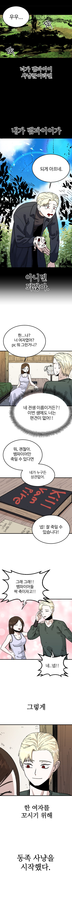
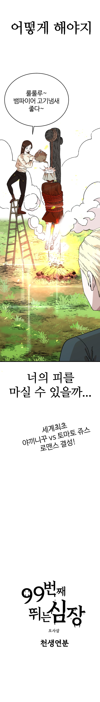

— · 40 · 2026-11-22 19:55:02 · 원문


2화 링크
99번째 뛰는 심장 2화
수집 당시 댓글 40개
ㅇㅇ · 11.20 18:50:37
돌고돌아순정 · 11.20 19:14:12
↳ 답글 · 오사삼 · 11.20 19:21:31
카갤러1 · 11.20 20:13:09
↳ 답글 · 오사삼 · 11.20 20:21:15
↳ 답글 · 카갤러1 · 11.20 20:43:37
가면군 · 11.20 22:05:05
안성댁 · 11.21 03:26:22
기븐 · 11.21 20:08:09
봇치쟝 · 11.22 19:56:03
ㅇㅇ · 11.22 19:57:53
ㅇㅇ · 11.22 19:58:05
ㅇㅇ · 11.22 19:59:09
ㅇㅇ · 11.22 20:04:40
히이잉 · 11.22 20:05:13
ㄹㄹ · 11.22 20:06:10
ㅇㅇ · 11.22 20:07:22
ㅇㅇ · 11.22 20:07:32
↳ 답글 · ㅇㅇ · 11.22 20:51:32
ㅇㅇ · 11.22 20:19:29
ㅇㅇ · 11.22 20:22:38
ㅇㅇ · 11.22 20:43:33
ㅇㅇ · 11.22 21:07:01
↳ 답글 · ㅇㅇ · 11.22 22:18:43
ㅇㅇ · 11.22 21:35:17
ㅇㅇ · 11.22 21:39:36
히이잉 · 11.22 21:41:17
형아어디가 · 11.22 22:27:45
↳ 답글 · 형아어디가 · 11.22 22:28:11
↳ 답글 · 형아어디가 · 11.22 22:28:55
↳ 답글 · 형아어디가 · 11.22 22:29:10
↳ 답글 · 형아어디가 · 11.22 22:29:17
ㅇㅇ · 11.22 22:34:52
ㅇㅇ · 11.22 23:27:35
04p · 11.22 23:46:13
ㅇㅇ · 11.22 23:59:09
ㅇㅇ · 11.23 00:46:59
ㅇㅇ · 11.23 02:03:04
ㅇㅇ · 11.23 02:03:07
냐아 · 11.23 04:30:20
댓글
수집 당시 댓글 40개
ㅇㅇ · 11.20 18:50:37
돌고돌아순정 · 11.20 19:14:12
· 오사삼 · 11.20 19:21:31
카갤러1 · 11.20 20:13:09
· 오사삼 · 11.20 20:21:15
· 카갤러1 · 11.20 20:43:37
가면군 · 11.20 22:05:05
안성댁 · 11.21 03:26:22
기븐 · 11.21 20:08:09
봇치쟝 · 11.22 19:56:03
ㅇㅇ · 11.22 19:57:53
ㅇㅇ · 11.22 19:58:05
ㅇㅇ · 11.22 19:59:09
ㅇㅇ · 11.22 20:04:40
히이잉 · 11.22 20:05:13
ㄹㄹ · 11.22 20:06:10
ㅇㅇ · 11.22 20:07:22
ㅇㅇ · 11.22 20:07:32
· ㅇㅇ · 11.22 20:51:32
ㅇㅇ · 11.22 20:19:29
ㅇㅇ · 11.22 20:22:38
ㅇㅇ · 11.22 20:43:33
ㅇㅇ · 11.22 21:07:01
· ㅇㅇ · 11.22 22:18:43
ㅇㅇ · 11.22 21:35:17
ㅇㅇ · 11.22 21:39:36
히이잉 · 11.22 21:41:17
형아어디가 · 11.22 22:27:45
· 형아어디가 · 11.22 22:28:11
· 형아어디가 · 11.22 22:28:55
· 형아어디가 · 11.22 22:29:10
· 형아어디가 · 11.22 22:29:17
ㅇㅇ · 11.22 22:34:52
ㅇㅇ · 11.22 23:27:35
04p · 11.22 23:46:13
ㅇㅇ · 11.22 23:59:09
ㅇㅇ · 11.23 00:46:59
ㅇㅇ · 11.23 02:03:04
ㅇㅇ · 11.23 02:03:07
냐아 · 11.23 04:30:20